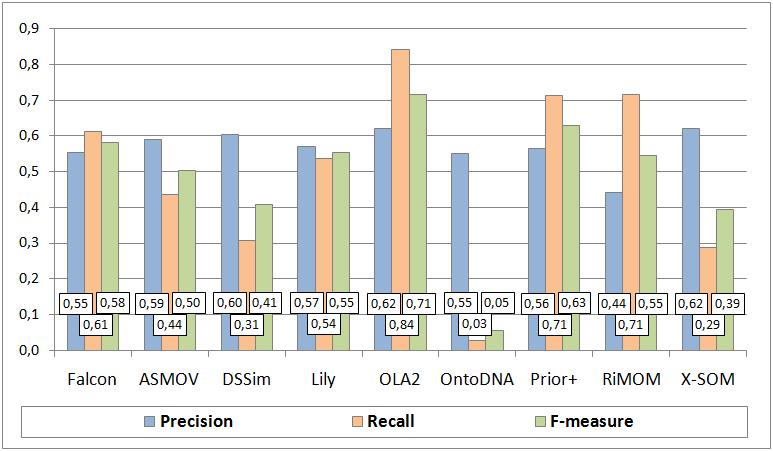
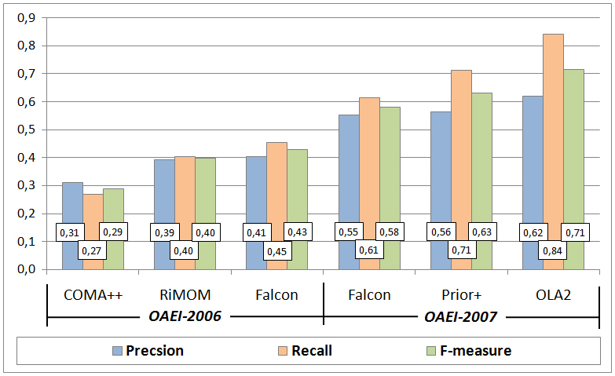
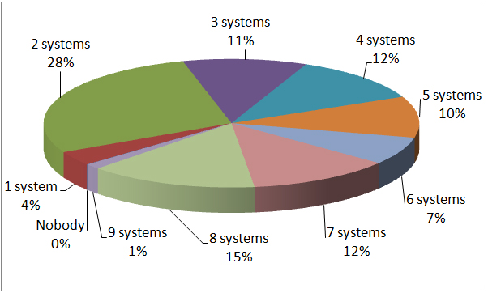
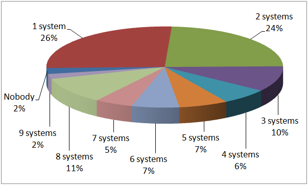
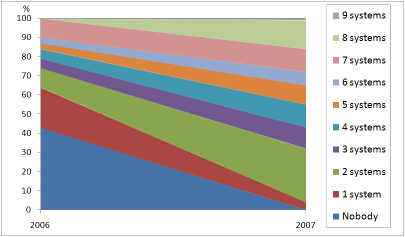
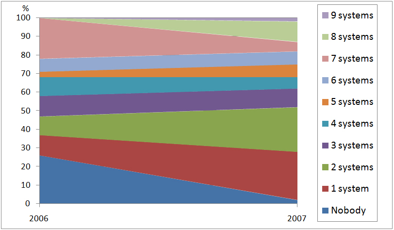

This test case aims at providing a challenging task for ontology matching systems in the domain of large directories. The test case set up is provided here.
In OAEI-2007, 9 out of 18 matching systems participated on the web directories dataset, while in OAEI-2006 - 7 out of 10 and in OAEI-2005 - 7 out of 7. Only the Falcon system participated in all three evaluations of the web directories dataset. In 2007, the systems demonstrated substantially higher quality results than in previous two years.
Precision, Recall and F-measure of the system results on the web directories test case are shown in Figure 1. These indicators have been computed following the TaxMe and TaxMe2 methodologies and with the help of Alignment API, version 3.0.

Figure 1. Matching quality results.
Let us make several observations concerning quality of the results of the participated systems. In particular, the average F-measure of the systems increased from approximately 29% in 2006 to 49% in 2007. The highest F-measure of 71% was demonstrated by the OLA2 system in 2007. The average Precision of the systems increased from approximately 35% in 2006 to 57% in 2007. The highest Precision of 62% was demonstrated by both the OLA2 system and X-SOM in 2007. The average Recall of the systems increased from approximately 22% in 2005 to 26% in 2006 and to 50% in 2007. The highest Recall of 84% was demonstrated by the OLA2 system in 2007. Notice that in 2005 this dataset allowed for estimating only Recall, therefore in the above observations there are no values of Precision and F-measure for 2005.
A comparison of the results in 2006 and 2007 for the top-3 systems of each of the years based on the highest values of the F-measure indicator is shown in Figure 2. The key observation here is that quality of the best F-measure result of 2006 demonstrated by Falcon is almost doubled (increased by ~1.7 times) in 2007 by OLA2. The best Precision result of 2006 demonstrated by Falcon was increased by ~1.5 times in 2007 by both OLA2 and X-SOM. Finally, for what concerns Recall, the best result of 2005 demonstrated by OLA was increased by ~1.4 times in 2006 by Falcon and further increased by ~1.8 times in 2007 by OLA2. Thus, the OLA team managed to improve by ~2.6 times its Recall result of 2005 in 2007.

Figure 2. Comparison of matching quality results in 2006 and 2007.
Partitions of positive and negative correspondences according to the system results are presented in Figure 3 and Figure 4, respectively.

Figure 3. Partition of the system results on positive correspondences.
Figure 3 shows that the systems managed to discover all the positive correspondences (Nobody - 0%). Only 15% of positive correspondences were found by almost all (8) matching systems. Figure 4 shows that almost all (8) systems found 11% of negative correspondences, i.e., mistakenly returned them as positive. The last two observations suggest that the discrimination ability of the dataset is still high.

Figure 4. Partition of the system results on negative correspondences.
Let us now compare partitions of the system results in 2006 and 2007 on positive and negative correspondences, see Figure 5 and Figure 6, respectively.

Figure 5. Comparison of partitions of the system results on positive correspondences in 2006 and 2007.
Figure 5 shows that 43% of positive correspondences have not been found by any of the matching systems in 2006, while in 2007 all the positive correspondences have been collectively found; see also how the selected regions (e.g., for 2 systems) consequently enlarge from 2006 to 2007.

Figure 6. Comparison of partitions of the system results on positive correspondences in 2006 and 2007.
Figure 6 shows that in 2006 in overall the systems have correctly not returned 26% of negative correspondences, while in 2007, this indicator decreased to 2%. In turn in 2006, 22% of negative correspondences were mistakenly found by all (7) the matching systems, while in 2007, this indicator decreased to 5%. An interpretation of these observations could be that systems keep trying various combinations of both "brave" and "cautious" strategies in discovering correspondences with a convergence towards better quality, since average Precision increased from 2006 to 2007.
The key observation out of this evaluation is that the ontology matching community has made a substantial progress on the web directories task this year. In fact, as Figure 2 indicates, quality of the results is almost doubled from 2006 to 2007. This suggests that the systems experience fewer difficulties on the test case, although there still exists a large room for further improvements. Finally, as partitions of positive and negative correspondences indicate (see Figure 3 and Figure 4), the dataset retains good discrimination ability, i.e., different sets of correspondences are still hard for the different systems.